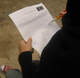

پذيرش > تریبون > گزارش كمپين > شش كميته، يك دفتر و جذب ده ها نيروي تازه نفس، گام اول زنجاني ها
 گزارشي از روند پيشرفت كمپين در زنجان: گزارشي از روند پيشرفت كمپين در زنجان:

 شش كميته، يك دفتر و جذب ده ها نيروي تازه نفس، گام اول زنجاني ها شش كميته، يك دفتر و جذب ده ها نيروي تازه نفس، گام اول زنجاني ها
26 آبان 1385 - صفيه قره باغي - نسخه قابل چاپ
فمنيست هاي زنجاني از همان روزهاي اول، همراه و هميار كمپين بودند و حالا با گذشت نزديك به سه ماه از آغاز به كار رسمي كمپين موفق به سازماندهي گسترده و منظم فعالان زنجان شده اند.
گزارش صفيه قره باغي، از اعضاي گروه ترانه را از چگونگي شكل گيري كمپين در زنجان و روند پيشرفت كار مي خوانيم:
با آغاز به كار كمپين يك ميليون امضا براي تغيير قوانين تبعيض آميز ، موسسه غير دولتي ترانه كه از سال 82 در زمينه زنان ( فمينيسم ) فعاليت مي كند و تاكنون توانسته جمع خوبي را گرد هم بياورد . نيز تصميم گرفت مسوليت جمع آوري اين امضاها را در زنجان بر عهده بگيرد و از همان روزهاي اول كمپين كار خود را شروع كرد.
در همين راستا 11 آبان برنامه اي با موضوع بررسي جايگاه زن در قوانين مدني ترتيب داده شد. سخنران اين برنامه دكتر نسرين ستوده بود كه به همراه الناز ناطقي و ترانه امير تيموري از اعضاي كمپين يك ميليون امضا به زنجان آمده بودند . اين برنامه ساعت 4 بعد از ظهر با حضور بيش از 100 نفر برگزار شد كه گزارش اين برنامه را مي توانيد در اينجا بخوانيد.
براي تقسيم كار و براي اينكه منسجم تر عمل شود روز پنجشنبه 18 آبان جلسه اي با دعوت از همه علاقه مندان به اين حركت و فعالان حوزه زنان برپا شد.
در اين جلسه كميته هايي كه بايد تشكيل مي شد معرفي و تصويب شدند و در نهايت هم براي هريك از اين كميته ها مسؤلي انتخاب شد كه هر دو هفته يك بار گزارش كار بدهند:
1. كميته ي اطلاع رساني , با مسوليت ميترا ترابي كه وظيفه ي اصلي اش ارتباط با مطبوعات و خبرگزاري ها و تهيه ي وبلاگي براي اطلاع رساني و در نظر گرفتن ايميلي براي ارتباطات خواهد بود . قرار شد هريك از افراد آخر هر هفته گزارشي از كارهايي را كه انجام داده به صورت مكتوب براي انتشار در وبلاگي كه راه اندازي شده است تحويل بدهند. كار جمع آوري مستندات هم بر عهده ي اين كميته است .
2. كميته ي مالي كه از دو بخش تشكيل مي شود . بخش اول مربوط است به رسيدگي به حسابه و فاكتورها و ..كه بر عهده ي مهناز اسكندريون گذاشته شد و بخش دوم دررابطه با جذب افرادي است كه مايل اند از نظر مالي به كمپين كمك كنندكه مسؤل اين بخش عطيه طاهري است. البته براي تامين مخارج قرار شد در مرحله اول هر يك از اعضاي كمپين در زنجان، مبلغ 5000 تومان براي تهيه دفترچه ها كمك كنند و از اين به بعد ماهيانه 2000 تومان براي كارهاي كمپين به كميته ي مالي داده شود.
3. كميته ي تداركات با مسوليت مريم لطف اللهي كه كارش تهيه ي تداركات مورد نياز است .
4. كميته ي آموزشي با مسوليت شبنم پوكاله كه مهمترين برنامه اش برگزاري كارگاه هاي آموزشي چهره به چهره خواهد بود .
5. كميته ي شهرستان ها با مسوليت زينب نوري كه وظيفه اش ايجاد ارتباط با شهرستانهاي زنجان و شناسايي افرادي كه بتوانند در شهرستان ها امضا جمع كنند و..
6. كميته ي سازماندهي با مسوليت صفيه قره باغي كه كار اصلي اش جذب داوطلبين و سازماندهي آنها براي كار , ايجا د هماهنگي بين كميته ها , ارتباط با تهران و ارسال گزارشات به صورت هفتگي , برگزاري جلسات كميته ها هر دو هفته يك بار و جمع آوري فرم امضاهاي پر شده خواهد بود .
از نتايج ديگر اين جلسه اين بود كه مكاني (البته به صورت موقت) براي كمپين در نظر گرفته شد تا هر دوهفته يك بار روز پنجشنبه ساعت 4 به بعد جلسات كميته ها برگزار شود . اين مكان در حال حاضر به عنوان مكان مراجعه ي داوطلبين هم مورد استفاده قرار مي گيرد .
از نتايج ديگر جلسه اين بود كه :يكي از دوستان پزشك براي صحبت با پزشكان و گرفتن امضا از آنها اعلام آمادگي كردند . يك نفر ديگر مسول جمع آوري امضا در بيمارستانها شد، يكي از آقايان قرار شد با وكلا و اساتيد و دانشجويان حقوق صحبت كنند و چند نفر از معلمان و دانشجويان هم براي جمع آوري امضا در دانشگاه ها و مدارس اعلام آمادگي كردند .
ارسال به
بالاترین
،
توییتر
،
فریندفید
،
فیسبوک
در همين بخش :
 دهمین دورۀ مراسم تندیس صدیقه دولت آبادی ۱۳۹۲ دهمین دورۀ مراسم تندیس صدیقه دولت آبادی ۱۳۹۲
کارت پستالهایی به بهانهی هشت مارس و به یاد همهی مبارزین راه برابری
بیانیه بیش از 350 تن از مدافعان حقوق زنان به مناسبت روز جهانی زن؛ زنان هر روز فرودستتر میشوند
لباسی که برای تن ما دوخته اند! /اعظم بهرامی
چالشها و چشمانداز فعالیت مدنی زنان
ديگر بخش ها :
طرح یک میلیون امضا
|
مقالات
|
سایت نوشته ها
|
اخبار
|
گزارش كمپين
|
گفت و گو
|
علیه سکوت
|
كوچه به كوچه
|
نامه های شما
|
گزارش ویژه
|
گفتگو با اعضا
|
ویژه سالگرد کمپین
|
تصویر برابری
|
دل آرام علی
|
تریبون
|
مقالات
|
تاریخ شفاهی
|
خارج از چارچوب
|
کتابخانه
|
درباره کمپین
|
کمپین در شهرها
|
کمپین در بند
|
صدای تغییر
|
ویژه 22 خرداد
|
لایحه حمایت از خانواده
|
گالری
|
عشا مومنی
|
امیر یعقوبعلی
|
خدیجه مقدم
|
راحله عسگری زاده و نسیم خسروی
|
پروین اردلان،جلوه جواهری، مریم حسین خواه، ناهید کشاورز
|
زینب پیغمبرزاده
|
سعیده امین، سارا ایمانیان، محبوبه حسین زاده، ناهید کشاورز و همایون نامی
|
احترام شادفر
|
نسیم سرابندی زاده،فاطمه دهدشتی
|
وبلاگ مهمان
|
پرونده خرم آباد
|
دستگیری ها
|
مریم مالک
|
پرستو اللهیاری
|
مهرنوش اعتمادی
|
سمیه رشیدی
|
Other Languages
|
همراهان
|
«فراخوان کمپین ده روز با بهاره هدایت»
| English
|